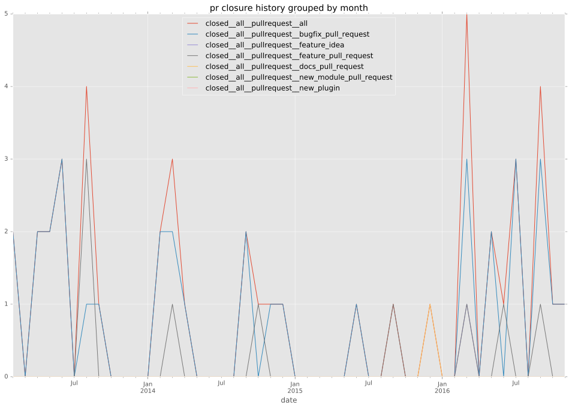

authors
- elliotttf
maintainers
- lujeni
contributors
- elliotttf : 29 commits
- cove : 20 commits
- marcosdiez : 12 commits
- Lujeni : 11 commits
- podollb : 7 commits
- Dufgui : 7 commits
- senz : 6 commits
- mscherer : 5 commits
- UnderGreen : 5 commits
- h0nIg : 4 commits
- gyurco : 4 commits
- bcoca : 4 commits
- mpdehaan : 3 commits
- jpmens : 3 commits
- jctanner : 2 commits
- gw0 : 2 commits
- sivel : 1 commits
- ryancurrah : 1 commits
- lsb : 1 commits
- laggyluke : 1 commits
total issue counts
feature pull request: 9
documentation pull request: 1
pullrequest: 49
docs pull request: 3
bugfix pull request: 36
feature idea: 2
issue: 14
bug report: 12
issue history
pullrequest history

days open by issue type
bugfix pull request
count: 54
std: 55.9147549249
min: 0
max: 327
median: 2.0
mean: 18.7407407407
all
count: 89
std: 92.1082905107
min: 0
max: 594
median: 2.0
mean: 35.1685393258
documentation pull request
count: 2
std: 0.0
min: 41
max: 41
median: 41.0
mean: 41.0
pullrequest
count: 0
std: nan
min: nan
max: nan
median: nan
mean: nan
docs pull request
count: 5
std: 0.0
min: 0
max: 0
median: 0.0
mean: 0.0
feature pull request
count: 16
std: 77.7439976247
min: 0
max: 238
median: 13.0
mean: 45.5625
feature idea
count: 1
std: nan
min: 24
max: 24
median: 24.0
mean: 24.0
issue
count: 0
std: nan
min: nan
max: nan
median: nan
mean: nan
bug report
count: 11
std: 198.629440279
min: 0
max: 594
median: 24.0
mean: 116.636363636
closures grouped by total days open